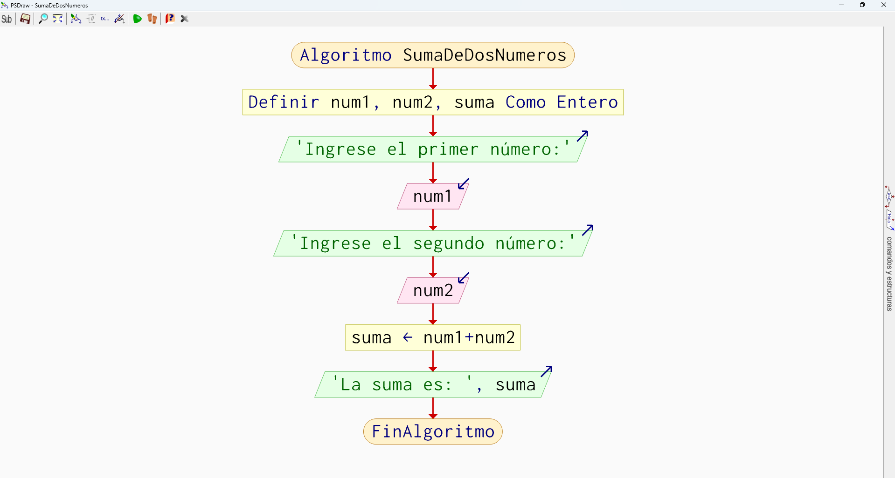

Definición
Un diagrama de flujo es la representación de un algoritmo por medio de dibujos (símbolos) unidos con flechas que indican el orden en que se hacen los pasos.
Símbolos de un diagrama de flujo
| Símbolo | Nombre | Para qué se usa |
|---|---|---|
| Óvalo | Inicio / Fin | Indica dónde empieza y dónde termina el diagrama. |
| Rectángulo | Proceso | Se usa para operaciones, cálculos o asignaciones. |
| Rombo | Decisión | Plantea una pregunta con dos caminos: Sí o No. |
| Paralelogramo | Entrada / Salida | Se usa para leer datos o mostrar resultados. |
| Círculo | Conector | Une partes del diagrama que están separadas. |
| Flecha | Línea de flujo | Indica la dirección en que sigue el diagrama. |
Reglas para construirlo
- Debe tener un solo inicio y un fin.
- Se dibuja de arriba hacia abajo y de izquierda a derecha.
- Cada símbolo se usa solo para lo que sirve.
- Todas las líneas deben tener flecha.
- El rombo de decisión debe tener por lo menos dos salidas (Sí y No).
- Se deben evitar las líneas que se cruzan.
- El diagrama debe verse ordenado y claro.
